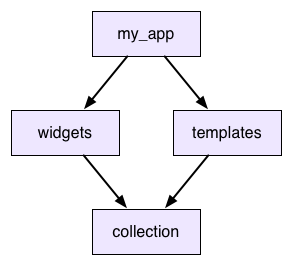
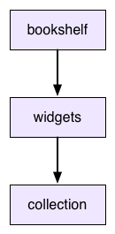

One of pub’s main jobs is helping you work with versioning. This document explains a bit about the history of versioning and pub’s approach to it. Consider this to be advanced information. If you want a better picture of why pub was designed the way it was, read on. If you just want to use pub, the other docs will serve you better.
Modern software development, especially web development, leans heavily on reusing lots and lots of existing code. That includes code you wrote in the past, but also code from third-parties, everything from big frameworks to small utility libraries. It’s not uncommon for an application to depend on dozens of different packages and libraries.
It’s hard to understate how powerful this is. When you see stories of small web startups building a site in a few weeks that gets millions of users, the only reason they can achieve this is because the open source community has laid a feast of software at their feet.
But this doesn’t come for free: There’s a challenge to code reuse, especially reusing code you don’t maintain. When your app uses code being developed by other people, what happens when they change it? They don’t want to break your app, and you certainly don’t either.
We solve this by versioning. When you depend on some piece of outside code,
you don’t just say “My app uses widgets.” You say, “My app uses
widgets 2.0.5.” That combination of name and version number uniquely
identifies an immutable chunk of code. The people updating widgets can
make all of the changes they want, but they promise to not touch any already
released versions. They can put out 2.0.6 or 3.0.0 and it won’t affect you
one whit because the version you use is unchanged.
When you do want to get those changes, you can always point your app to a
newer version of widgets and you don’t have to coordinate with those
developers to do it. So, problem solved, right?
Well, no. Depending on specific versions works fine when your dependency graph is really just a dependency tree. If your app depends on a bunch of packages, and those things in turn have their own dependencies and so on, that all works fine as long as none of those dependencies overlap.
But consider the following example:

So your app uses widgets and templates, and both of those use
collection. This is called a shared dependency. Now what happens when
widgets wants to use collection 2.3.5 and templates wants
collection 2.3.7? What if they don’t agree on a version?
One option is to just let the app use both
versions of collection. It will have two copies of the library at different
versions and widgets and templates will each get the one they want.
This is what npm does for node.js. Would it work for Dart? Consider this scenario:
collection defines some Dictionary class.widgets gets an instance of it from its copy of collection (2.3.5).
It then passes it up to my_app.my_app sends the dictionary over to templates.collection (2.3.7).Dictionary type annotation for that object.As far as Dart is concerned, collection 2.3.5 and collection 2.3.7 are
entirely unrelated libraries. If you take an instance of class Dictionary
from one and pass it to a method in the other, that’s a completely different
Dictionary type. That means it will fail to match a Dictionary type
annotation in the receiving library. Oops.
Because of this (and because of the headaches of trying to debug an app that has multiple versions of things with the same name), we’ve decided npm’s model isn’t a good fit.
Instead, when you depend on a package, your app will only use a single copy of that package. When you have a shared dependency, everything that depends on it has to agree on which version to use. If they don’t, you get an error.
That doesn’t actually solve your problem though. When you do get that error,
you need to be able to resolve it. So let’s say you’ve gotten yourself into
that situation in the previous example. You want to use widgets and
templates, but they are using different versions of collection. What do
you do?
The answer is to try to upgrade one of those. templates wants
collection 2.3.7. Is there a later version of widgets that you can upgrade
to that works with that version?
In many cases, the answer will be “no”. Look at it from the perspective of the
people developing widgets. They want to put out a new version with new changes
to their code, and they want as many people to be able to upgrade to it it as
possible. If they stick to their current version of collection then anyone
who is using the current version widgets will be able to drop in this new one
too.
If they were to upgrade their dependency on collection then everyone who
upgrades widgets would have to as well, whether they want to or not. That’s
painful, so you end up with a disincentive to upgrade dependencies. That’s
called version lock: everyone wants to move their dependencies forward, but
no one can take the first step because it forces everyone else to as well.
To solve version lock, we loosen the constraints that packages place on their
dependencies. If widgets and templates can both indicate a range of
versions for collection that they will work with, then that gives us enough
wiggle room to move our dependencies forward to newer versions. As long as there
is overlap in their ranges, we can still find a single version that makes them
both happy.
This is the model that bundler follows, and is pub’s
model too. When you add a dependency in your pubspec, you can specify a range
of versions that you can accept. If the pubspec for widgets looked like this:
dependencies: collection: '>=2.3.5 <2.4.0'
Then we could pick version 2.3.7 for collection and then both widgets
and templates have their constraints satisfied by a single concrete version.
When you add a dependency to your package, you’ll sometimes want to specify a range of versions to allow. How do you know what range to pick? You need to forward compatible, so ideally the range encompasses future versions that haven’t been released yet. But how do you know your package is going to work with some new version that doesn’t even exist yet?
To solve that, you need to agree on what a version number means. Imagine that
the developers of a package you depend on say, “If we make any backwards
incompatible change, then we promise to increment the major version number.”
If you trust them, then if you know your package works with 2.5.7 of theirs,
you can rely on it working all the way up to 3.0.0. So you can set your range
like:
dependencies: collection: '>=2.3.5 <3.0.0'
To make this work, then, we need to come up with that set of promises. Fortunately, other smart people have done the work of figuring this all out and named it semantic versioning.
That describes the format of a version number, and the exact API behavioral differences when you increment to a later version number. Pub requires versions to be formatted that way, and to play well with the pub community, your package should follow the semantics it specifies. You should assume that the packages you depend on also follow it. (And if you find out they don’t, let their authors know!)
Although semantic versioning doesn’t promise any compatibility between versions
prior to 1.0.0, the Dart community convention is to treat those versions
semantically as well. The interpretation of each number is just shifted down one
slot: going from 0.1.2 to 0.2.0 indicates a breaking change, going to
0.1.3 indicates a new feature, and going to 0.1.2+1 indicates a change that
doesn’t affect the public API.
We’ve got almost all of the pieces we need to deal with versioning and API evolution now. Let’s see how they play together and what pub does.
When you define your package, you list its immediate dependencies—the packages it itself uses. For each one, you specify the range of versions it allows. Each of those dependent packages may in turn have their own dependencies (called transitive dependencies. Pub will traverse these and build up the entire deep dependency graph for your app.
For each package in the graph, pub looks at everything that depends on it. It gathers together all of their version constraints and tries to simultaneously solve them. (Basically, it intersects their ranges.) Then it looks at the actual versions that have been released for that package and selects the best (most recent) one that meets all of those constraints.
For example, let’s say our dependency graph contains collection, and three
packages depend on it. Their version constraints are:
>=1.7.0
>=1.4.0 <2.0.0
<1.9.0
The developers of collection have released these versions of it:
1.7.0
1.7.1
1.8.0
1.8.1
1.8.2
1.9.0
The highest version number that fits in all of those ranges is 1.8.2, so pub
picks that. That means your app and every package your app uses will all use
collection 1.8.2.
The fact that selecting a package version takes into account every package that depends on it has an important consequence: the specific version that will be selected for a package is a global property of the app using that package.
The following example shows what this means. Let’s say we have two apps. Here are their pubspecs:
name: my_app dependencies: widgets:
name: other_app dependencies: widgets: collection: '<1.5.0'
They both depend on widgets, whose pubspec is:
name: widgets dependencies: collection: '>=1.0.0 <2.0.0'
The other_app package uses depends directly on collection itself. The
interesting part is that it happens to have a different version constraint on
it than widgets does.
What this means is that you can’t just look at the widgets package in
isolation to figure out what version of collection it will use. It depends
on the context. In my_app, widgets will be using collection 1.9.9. But
in other_app, widgets will get saddled with collection 1.4.9 because of
the other constraint that otherapp places on it.
This is why each app gets its own “packages” directory: The concrete version selected for each package depends on the entire dependency graph of the containing app.
Package authors must define package contraints with care. Consider the following scenario:

The bookshelf package depends on widgets.
The widgets package, currently at 1.2.0,
exports
collection via export "package:collection/collection.dart", and is
at 2.4.0. The pubspec files are as follows:
name: bookshelf dependencies: widgets: '>=1.2.0 <2.0.0'
name: widgets dependencies: collection: '>=2.4.0 <3.0.0'
The collection package is then updated to 2.5.0.
The 2.5.0 verion of collection includes a new method called sortBackwards.
bookshelf may call sortBackwards,
because it’s part of the API exposed by widgets,
despite bookshelf having only a transitive dependency on collection.
Because widgets has an API that is not reflected in its version number,
the app that uses the bookshelf package and calls sortBackwards may crash.
Exporting an API causes that API to be treated as if it is
defined in the package itself, but it can’t increase the version number when
the API adds features. This means that bookshelf has no way of declaring
that it needs a version of widgets that supports sortBackwards.
For this reason, when dealing with exported packages,
it’s recommended that the package’s author keeps a tighter
limit on the upper and lower bounds of a dependency.
In this case, the range for the widgets package should be narrowed:
name: bookshelf dependencies: widgets: '>=1.2.0 <1.3.0'
name: widgets dependencies: collection: '>=2.4.0 <2.5.0'
This translates to a lower bound of 1.2.0 for widgets and 2.4.0
for collection.
When the 2.5.0 version of collection is released,
then widgets is also updated to 1.3.0 and the corresponding constraints
are also updated.
Using this convention ensures that users have the correct version of both packages, even if one is not a direct dependency.
So once pub has solved your app’s version constraints, then what? The end result is a complete list of every package that your app depends on either directly or indirectly and the best version of that package that will work with your app’s constraints.
Pub takes that and writes it out to a lockfile in your app’s directory
called pubspec.lock. When pub builds the “packages” directory your app, it
uses the lockfile to know what versions of each package to pull in. (And if
you’re curious to see what versions it selected, you can read the lockfile to
find out.)
The next important thing pub does is it stops touching the lockfile. Once you’ve got a lockfile for your app, pub won’t touch it until you tell it to. This is important. It means you won’t spontanteously start using new versions of random packages in your app without intending to. Once your app is locked, it stays locked until you manually tell it to update the lockfile.
If your package is for an app, you check your lockfile into your source control system! That way, everyone on your team will be using the exact same versions of every dependency when they build your app. You’ll also use this when you deploy your app so you can ensure that your production servers are using the exact same packages that you’re developing with.
Of course, all of this presumes that your dependency graph is perfect and flawless. Even with version ranges and pub’s constraint solving and semantic versioning, you can never be entirely spared from the dangers of versionitis.
You might run into one of the following problems:
Lets say your app uses widgets and
templates and both use collection. But widgets asks for a version
of it between 1.0.0 and 2.0.0 and templates wants something
between 3.0.0 and 4.0.0. Those ranges don’t even overlap. There’s no
possible version that would work.
Let’s say after
putting all of the constraints on a shared dependency together, you’re
left with the narrow range of >=1.2.4 <1.2.6. It’s not an empty range.
If there was a version 1.2.4 of the dependency, you’d be golden. But maybe
they never released that and instead when straight from 1.2.3 to 1.3.0.
You’ve got a range but nothing exists inside it.
This is, by far, the most challenging part of pub’s version solving process. The process was described as “build up the dependency graph and then solve all of the constraints and pick versions”. But it doesn’t actually work that way. How could you build up the whole dependency graph before you’ve picked any versions? The pubspecs themselves are version-specific. Different versions of the same package may have different sets of dependencies.
As you’re selecting versions of packages, they are changing the shape of the dependency graph itself. As the graph changes, that may change constraints, which can cause you to select different versions, and then you go right back around in a circle.
Sometimes this process never settles down into a stable solution. Gaze into the abyss:
name: my_app version: 0.0.0 dependencies: yin: '>=1.0.0'
name: yin version: 1.0.0 dependencies:
name: yin version: 2.0.0 dependencies: yang: '1.0.0'
name: yang version: 1.0.0 dependencies: yin: '1.0.0'
In all of these cases, there is no set of concrete versions that will work for your app, and when this happens pub will report an error and tell you what’s going on. It definitely will not try to leave you in some weird state where you think things can work but won’t.
That was a lot of information, but here are the key points: